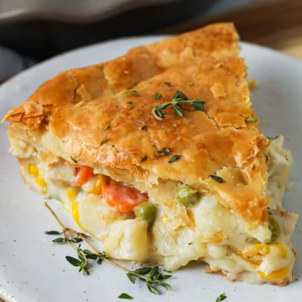

Chicken Pot Pie

A delicious family sized dish that will remind you of Sundays with your grandmother
This recipe does take a certain level of skill so don't get discouraged if it isn't perfect your first time around.
Ingredients
- All purpose flour
- butter, pre-chilled
- chicken broth
- frozen carrots and peas
- chicken
- onion
- milk
Directions
- Roast your chicken in the oven until it reaches and internal temperature of 165. Set aside to cool
- Cut your cutter into your flour. Add water and roll your flour into two quarter inch thick circles. Circles should match the size of your pot.
- Preheat your oven to 425 degrees F
- Make a butter and flour roux and add hot chicken broth to it
- Add your milk to the "gravy" to give it a creamier texture
- Add your chicken, chopped onions, and frozen vegetables to your gravy
- Add the pot pie mixture to your crust and cover
- Cook for 45 minutes. Cover the top with aluminum foil if it starts to get too dark
- Wait for pie to cool and enjoy